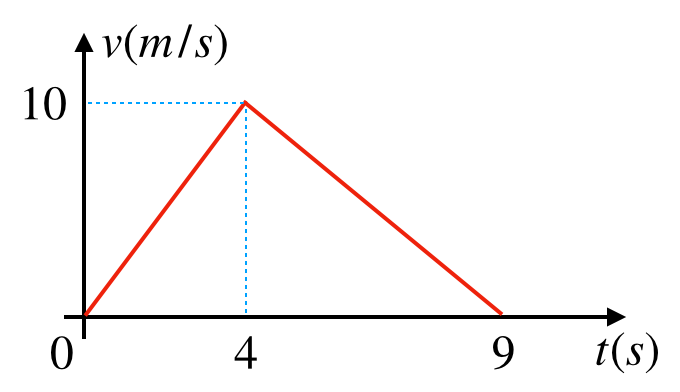
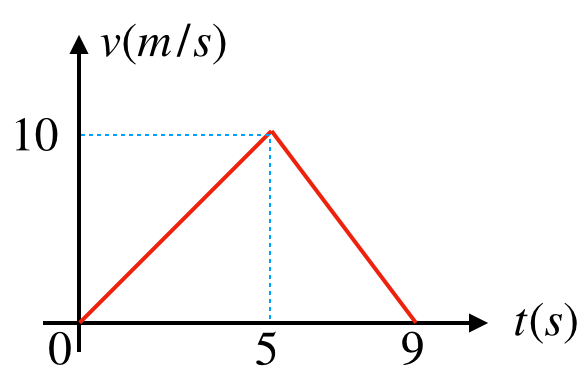
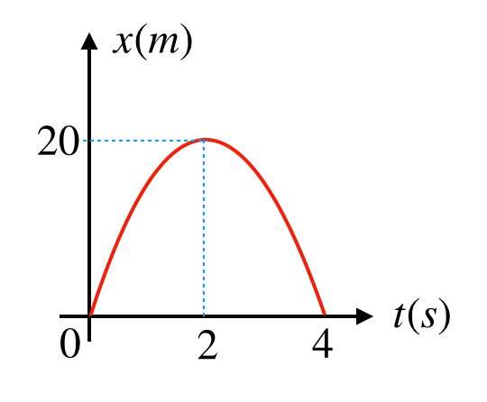

Interpretação de Gráficos v×t e x×t
Uma partícula move-se numa trajetória retilínea com a velocidade mostrada no gráfico a seguir.

Determine:
(I) o deslocamento da partícula no intervalo \(0\) s a \(9\) s;
(II) a velocidade média no intervalo \(0\) s a \(9\) s;
(III) as acelerações nos instantes: \(t=5\) s.
Uma partícula move-se numa trajetória retilínea com a velocidade mostrada no gráfico a seguir.
Determine, em m/s², as acelerações nos instantes: \(t = 3{,}0\) s e \(t = 6{,}0\) s.
Uma partícula, \(m=20\) g, move-se numa trajetória retilínea com a velocidade mostrada no gráfico a seguir.
Determine, em unidades do sistema internacional:
(I) a quantidade de movimento da partícula em \(t=3\) s;
(II) a energia cinética da partícula em \(t=5\) s.
Um ponto material, \(m=20\) g, move-se ao longo de uma trajetória retilínea como mostra o gráfico.

Determine a velocidade escalar média no percurso.
Um ponto material, \(m=20\) g, move-se ao longo de uma trajetória retilínea como mostra o gráfico.
Para este movimento, em unidades do sistema internacional, determine:
(I) a energia cinética em \(t=4\) s;
(II) a quantidade de movimento em \(t=7\) s.
(CEFET MG) Um objeto tem a sua posição (\(x\)) em função do tempo (\(t\)) descrito pela parábola conforme o gráfico.

Analisando-se esse movimento, o módulo de sua velocidade inicial, em m/s, e de sua aceleração, em m/s², são respectivamente iguais a:
(CEFET MG) Um objeto tem a sua posição (\(x\)) em função do tempo (\(t\)) descrito pela parábola conforme o gráfico.
Analisando-se esse movimento, determine a função horária do espaço.
(CEFET MG) Um objeto tem a sua posição (\(x\)) em função do tempo (\(t\)) descrito pela parábola conforme o gráfico.
Analisando-se esse movimento, determine a função horária da velocidade.
(CEFET MG) Um objeto tem a sua posição (\(x\)) em função do tempo (\(t\)) descrito pela parábola conforme o gráfico.
Analisando-se esse movimento, determine \(x\) no instante \(t=3{,}0\) s.
(CEFET MG) Um objeto tem a sua posição (\(x\)) em função do tempo (\(t\)) descrito pela parábola conforme o gráfico.
Analisando-se esse movimento, determine o módulo de \(v\) no instante \(t=3{,}0\) s.